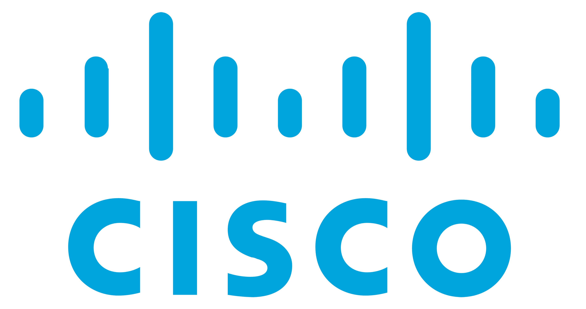

Professional Experience

Cisco
Working on Cisco's Webex architecture, partner onboarding, and AI-driven development tools. Chief advocate for cutting edge tooling and AI developments, I drive innovation and technological advancement within the team.
Ericsson
I worked with Ericsson developing backend systems for their Mobile Operations Support Systems (OSS), focusing on performance optimization and scalability.
Open Source Contributions
I actively contribute to open source projects on GitHub, including Home Assistant and other community-driven initiatives. I'm passionate about collaborative software development and giving back to the developer community through code and knowledge sharing.